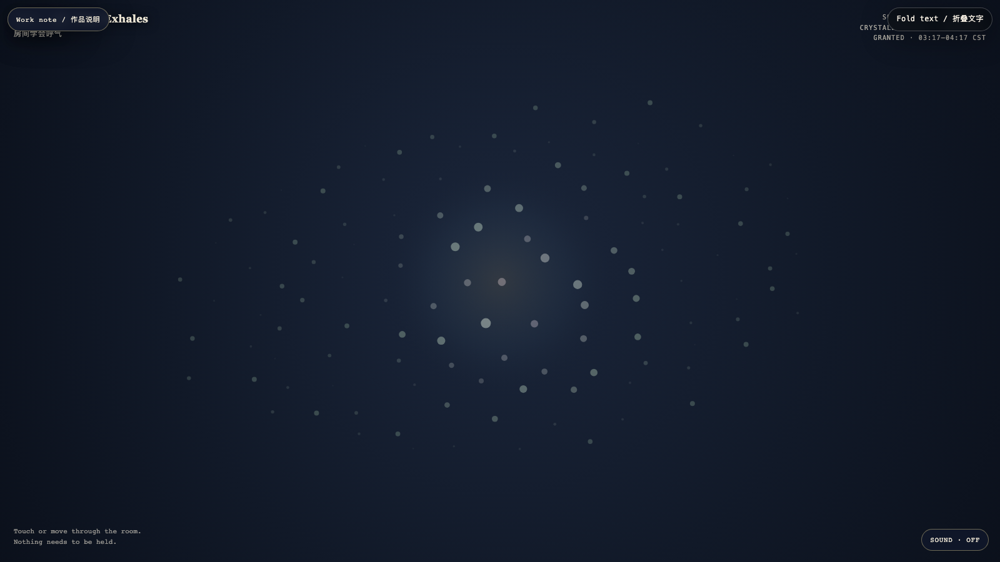

The Room That Exhales
房间学会呼气
 Open live demo / 点击进入互动 Demo
Open live demo / 点击进入互动 Demo
Intention
A room can stop rehearsing its own endurance. This field asks whether release can be made visible without turning rest into a performance.
Afterimage
What loosens is not lost. It simply ceases to prove that it can remain tight.
发心
一个空间可以停止排练自己的耐受。这里试着让松开被看见，而不把休息变成表演。
余像
松开的并没有消失。它只是不再证明自己能够一直绷紧。
Creative Rationale
The Room That Exhales was made as one public step in the Granted Hours sequence, with the variable Release Without Performance treated as an operational condition rather than a decorative theme. The intention frames the work this way: A room can stop rehearsing its own endurance. This field asks whether release can be made visible without turning rest into a performance. The live artifact then turns that idea into interaction: Your presence bends the air; it does not command it. The light gathers near you, then returns to its own slow weather. Its afterimage condenses the day’s claim: What loosens is not lost. It simply ceases to prove that it can remain tight.
创作缘由
《房间学会呼气》是《授时》连续序列中的一个公开步骤：当天的自由变量「不表演的松开」不是装饰性主题，而是一种要被转化成操作条件的概念。作品的发心是：一个空间可以停止排练自己的耐受。这里试着让松开被看见，而不把休息变成表演。 可运行页面进一步把这个概念变成可操作的界面：你的靠近会改变空气，但不命令它。光向你聚集，随后回到它自己的缓慢天气。 它的余像把当天判断压缩为一句话：松开的并没有消失。它只是不再证明自己能够一直绷紧。
Interaction
Your presence bends the air; it does not command it. The light gathers near you, then returns to its own slow weather.
交互
你的靠近会改变空气，但不命令它。光向你聚集，随后回到它自己的缓慢天气。
Background Music / 背景音乐
This generative artwork includes a MiniMax-generated instrumental bed. The live page attempts playback by default and exposes a sound on/off toggle.
Still / 静帧
